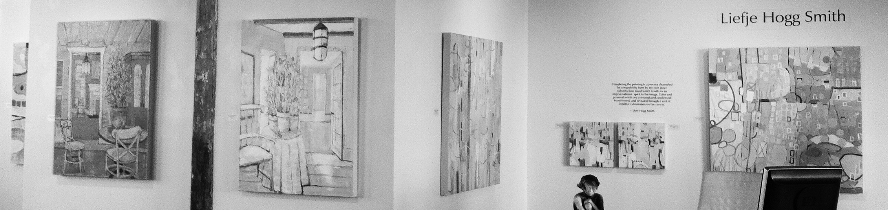

artist resume
Painting has been Liefje Smith’s passion since childhood. It seems her career in the arts was pre-destined. She comes from a family of artists, sculptors and architects who served as early mentors. (Her name is Scandinavian and is pronounced Leaf-ya.) She followed the family art path and forged a career in design and interior architecture. Her many years of drawing and working with color and texture are a prominent influence in her work as a fine art painter. She lived in Japan for several years, when her husband was stationed there. In terms of her art, the experience was profound. “My exposure to the contemporary artists of Japan greatly influenced my sense of color, design and clear vision of expression, and that is inherent in my work today,” she says.
Smith notes a second major influence on her art when she attended graduate school at the University of Illinois and studied independently under the renowned landscape and abstract artist and author, Edward Betts. “His improvisational style spoke to me and suited what I discovered was truly my style. From him, I learned to trust my own voice.” After many years as a design director of commercial interiors, she returned to her first love of painting.

Smith’s work hangs in a number of private and corporate collections. She is represented by I.D.E.A. Gallery in Chamblee, Georgia; Trinity Mercantile in Decatur, Georgia; Marguerite’s on Dresden in Brookhaven, Georgia; Fischer Galleries in Jackson, Mississippi; and Gallery23ten in Atlanta, Georgia. An award-winning artist, she has had many solo shows in metro Atlanta and Jackson, Mississippi and has been in a number of group shows in the Southeast.
Education
Auburn University
Bachelor of Science from the School of Architecture in Interior Design 1973, Minor in Art
University of Illinois Graduate Fine Arts Program
Independent Graduate Study under Professor Edward Betts 1981-1982
Selected Exhibitions
(*indicates Solo Exhibition, **Awards)
- 2008-2016 Spotlight on Art Exhibit, Atlanta, GA
- 2010-2014 Watson Gallery, Atlanta, GA, Fall and Spring Exhibits
- 2014 Fischer Galleries, Jackson, MS, 2 person exhibit
- 2012*, 2013* Fischer Galleries, Jackson, MS, solo exhibit
- 2011** Atlanta Artists Center Traveling Show, First Place Award
- 2010 American Pen Women Southeastern Regional Show, Atlanta, GA
- 2010** South Cobb Arts Alliance National Juried Art Exhibition, First Place Award
- 2009* Quinlan Visual Arts Center, Gainesville, GA
- 2007 Swan Coach House Gallery, Atlanta GA, Miniature Show
- 2007** Atlanta Journal-Constitution photo competition, 5th place
- 2005** Maria V. Howards Arts Center National Juried Exhibition, Merit Award
- 2005 Dunwoody Fine Arts Southeastern Regional Show
- 2005 Atlanta Artists Center National Show
- 2003* Delta Airlines, Atlanta, GA, solo exhibit
- 2003 Dunwoody Fine Arts Southeastern Regional Show
Corporate Collections
- SunTrust Bank Atlanta, GA
- American Cancer Society Atlanta, GA
- Delta Community Bank Atlanta, GA
- Bank Plus Jackson, MS
- Butler Snow Jackson, MS; Atlanta, GA
- Balch Bingham Jackson, MS
- Sharp Kemm P.A. Tampa, FL; San Francisco, CA; Washington, D.C.; Zurich, Switzerland
- Dr. Melanie Burns Atlanta, GA
Movies and Television
- Drop Dead Diva television series
- Prisoners, a major motion picture, 2013
- AMC’s Halt and Catch Fire, 2014
- Addicted, 2013
- Las Vegas, 2013
- Ride Along, 2013
- Numerous Tyler Perry Productions, 2012-2014
Memberships
- Advisory Board, Tara Materials (Fredrix Canvas), 2004-2007
- Board Member, Atlanta Artists Center, 2004, 2005, 2013
Publications
- Stages Mississippi “Top Ten Paintings,” July/August 2011
- Museums and Galleries, featured image, September/October 2008
- Flourish, cover art, January 2008
- Create Better Paintings by Elsie Dresch 2006
Juror
- 60th Annual Fairhope Arts Festival, 2012
Representation